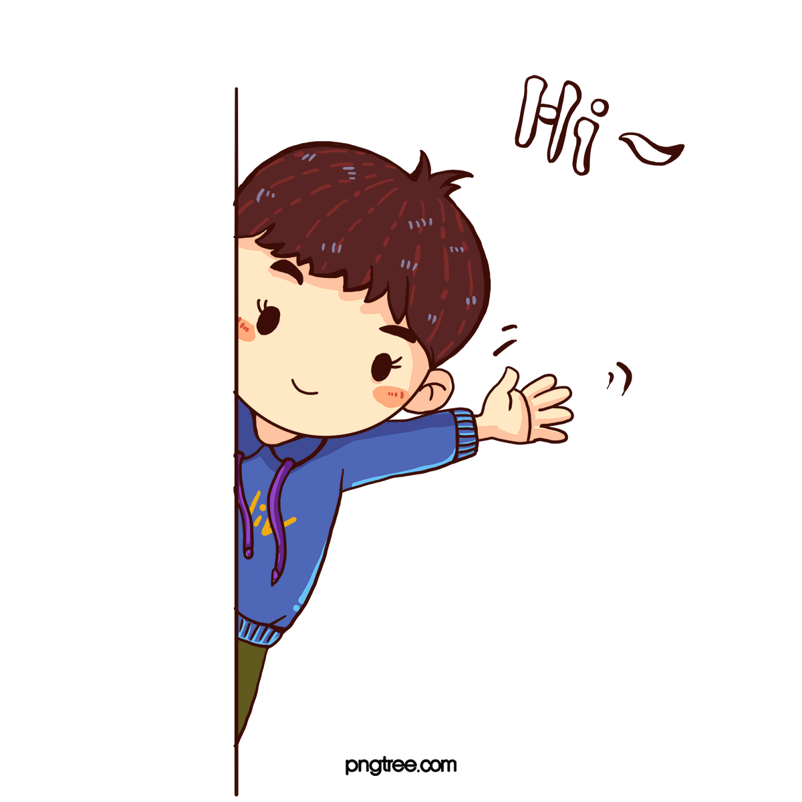

Tentang Kami
Ayo cari tahu tentang kami disini
Halo, Masyarakat Indonesia !
Kami adalah sebuah inisiatif layanan masyarakat yang hadir untuk memberikan solusi nyata bagi kebutuhan dan permasalahan di tengah masyarakat. Berlandaskan semangat gotong royong dan kepedulian sosial, kami berkomitmen untuk menghadirkan layanan yang mudah diakses, inklusif, dan berdampak langsung bagi seluruh lapisan masyarakat.
Didukung oleh tim yang berdedikasi serta jaringan relawan dan mitra yang solid, kami fokus pada pelayanan yang humanis dan berbasis kebutuhan warga. Baik dalam bentuk bantuan sosial, edukasi, layanan kesehatan, advokasi, maupun pemberdayaan komunitas.
